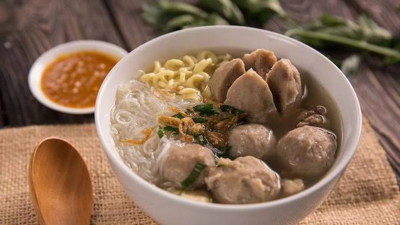

Bakso

Klik disini untuk melihat cara pembuatannya.
Bakso atau baso adalah jenis bola daging yang lazim ditemukan pada masakan Indonesia. Bakso umumnya dibuat dari campuran daging sapi giling dan tepung tapioka, tetapi ada juga bakso yang terbuat dari daging ayam, ikan, atau udang bahkan daging kerbau. Dalam penyajiannya, bakso umumnya disajikan panas-panas dengan kuah kaldu sapi bening, dicampur mi, bihun, taoge, tahu, terkadang telur lalu ditaburi bawang goreng dan seledri. Bakso sangat populer dan dapat ditemukan di seluruh Indonesia; dari gerobak pedagang kaki lima hingga restoran besar. Berbagai jenis bakso sekarang banyak ditawarkan dalam bentuk makanan beku yang dijual di pasar swalayan ataupun mal-mal. Irisan bakso dapat juga dijadikan pelengkap jenis makanan lain seperti mi goreng, nasi goreng, atau capcai.
Bahan-bahan:
500 gram daging sapi
1 butir telur
100 gram tepung kanji
3 siung bawang putih, haluskan
1 sdt lada bubuk
1/2 sdt bubuk pala
1 sdm garam
1/2 sdt kaldu sapi bubuk
Air secukupnya untuk merebus
Langkah:
- Giling 500 gram daging sapi yang sudah dibersihkan. Jika sudah halus, masukkan telur dan bumbu lainnya kecuali tepung kanji.
- Selanjutnya, tuang tepung kanji sedikit demi sedikit sambil terus diaduk,
- Setelah adonan bakso siap, masak air sampai mendidih. Kemudian bulat-bulatkan adonan sesuai selera dan masukkan ke dalam air yang mendidih.
- Biarkan hingga terapung, angkat, dan tiriskan.
- Bakso sapi buatan sudah siap untuk diolah menjadi hidangan lezat.
Diterbitkan oleh Fathan